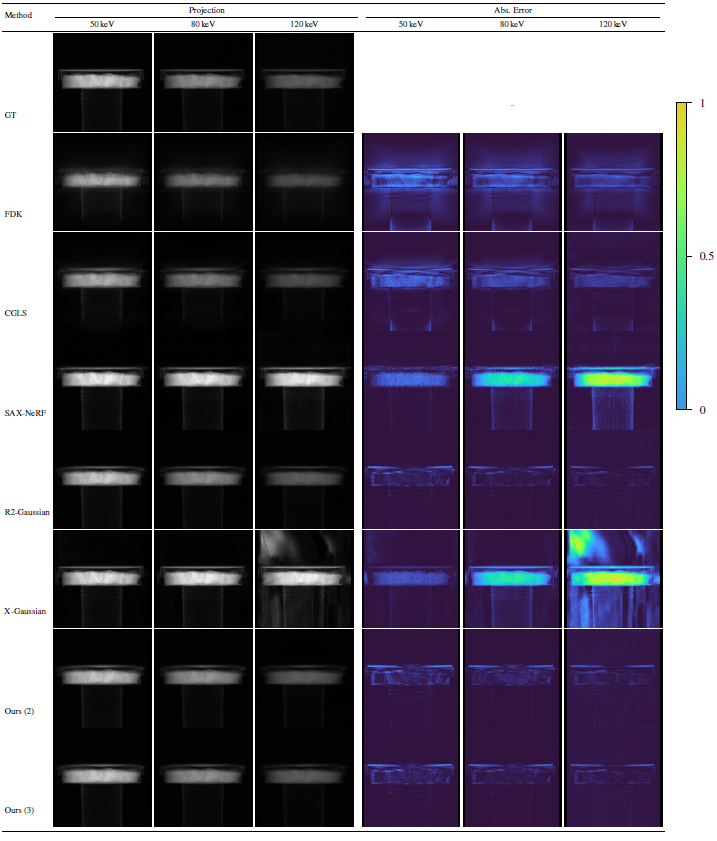
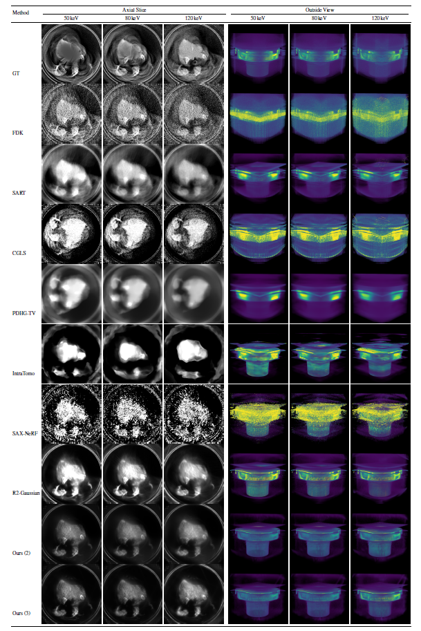
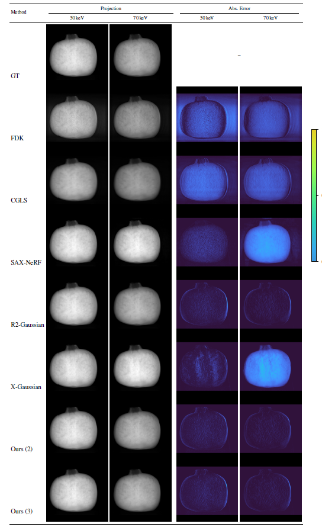
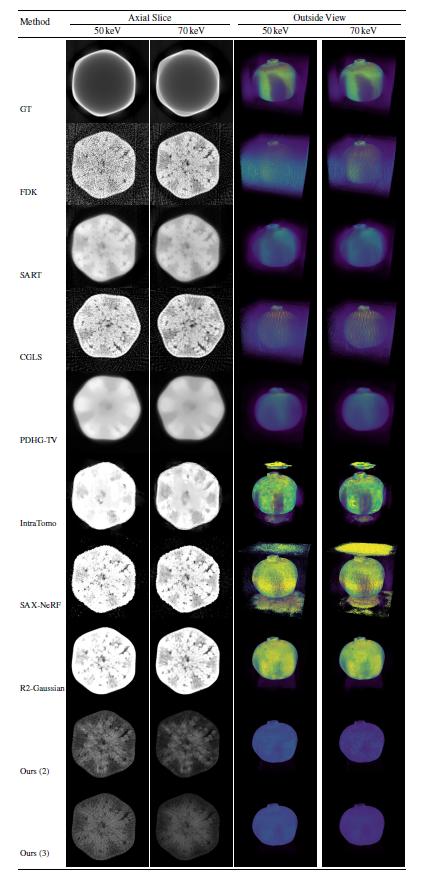
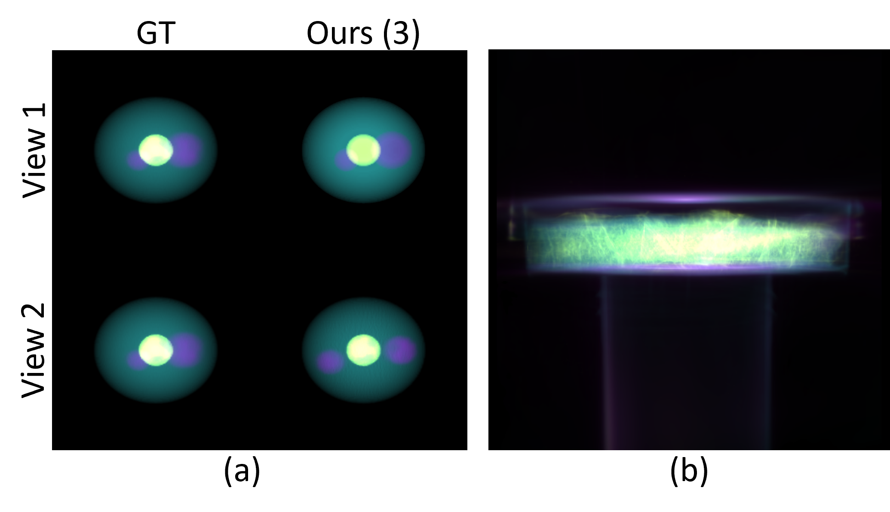
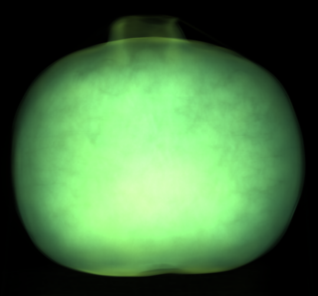

SpectralCTGaussians: Projection-Domain Reconstruction and Basis Material Decomposition for Spectral CT using 3D Gaussian Splatting
Abstract
Spectral computed tomography (CT) extends conventional CT by measuring attenuation across multiple energy channels, allowing improved modeling of physical X-ray interactions and energy-dependent material behavior and leading to richer scene understanding. We present a novel method for spectral CT reconstruction and basis material decomposition using 3D Gaussian Splatting by adding per-Gaussian basis material fractions to the set of learnable parameters, which together with a set of energy-dependent basis functions define the attenuation across the full spectral range.
The basis functions represent various physical attenuation models such as photoelectric absorption and Compton scattering, and are jointly optimized across all energy channels through a differentiable polychromatic forward model, with material decomposition performed via mean-shift clustering of the resulting coefficients. We evaluate our method on a baseline real-world dataset as well as a synthetic dataset that we introduce, comparing against traditional reconstruction algorithms and state-of-the-art learning-based CT reconstruction methods. Our approach outperforms all traditional baselines in novel view synthesis and achieves the best PSNR among all compared methods for spectral CT volume reconstruction, while describing all energy channels with a single shared representation that requires a number of Gaussians comparable to single-channel Gaussian splatting-based CT reconstruction approaches. For basis material decomposition, no traditional or learning-based baseline offers one-step decomposition with direct RGB material segmentation, and our method additionally recovers the photoelectric basis with higher PSNR than traditional pipelines.
Contributions
- We introduce a spectral Gaussian representation for CT, extending Gaussian-splatting-based CT reconstruction from a single density field to a spectral representation in which energy-dependent basis coefficient values are included directly in the optimization.
- We extend the differentiable CT rasterizer and voxelizer to compute basis-coefficient line integrals and embed them in a polychromatic forward projection model, so that all energy channels are optimized jointly in a single efficient pass, using a number of Gaussians comparable to a single-channel representation.
- We enable one-step basis material decomposition by optimizing the basis coefficients directly from the spectral projections following the photoelectric and Compton models of Alvarez and Macovski, complemented by a learnable K-edge basis for contrast agents such as iodine and for metals, and segment the resulting coefficients with mean-shift clustering into material maps with direct RGB output.
- We introduce a synthetic spectral CT dataset with ground-truth material information, enabling quantitative evaluation of the decomposition.
Method at a Glance
| Stage | Component | Purpose | Output |
|---|---|---|---|
| Preprocessing | Normalization & log-transform | Converts raw counts to log-projections, reduces noise and unifies scanner geometry and spectral metadata | One folder per energy channel, 75 training / 100 test views |
| Representation | Geometry (position, scale, rotation) and density ρi | Explicit differentiable 3D Gaussians shared across all energy channels | Up to 500k Gaussians, initialized from an FDK volume |
| Material functions fm,i | Per-Gaussian basis fractions with Σm fm,i = 1, decoupling composition from geometry | Photoelectric, Compton and (optional) K-edge fractions | |
| Rendering | Spectral rasterizer | Projects M basis channels instead of a single density (energy-agnostic, once per iteration) | Basis-coefficient projections of shape (M, H, W) |
| Basis functions μ̃m(E) | Photoelectric E−3, Klein–Nishina Compton, learnable sigmoid K-edge | Energy-basis matrix BE ∈ RK×M | |
| Polychromatic forward model | Beer–Lambert integral discretized into K = 64 midpoint samples over [20, 140] keV | Rendered log-projection per energy channel | |
| Training | L1 + D-SSIM + 3D/2D TV, Adam | Joint optimization of geometry, density, material functions and K-edge parameters (frozen for 2k warm-up iterations) | Optimized spectral Gaussian model (30k iterations) |
| Decomposition | Mean-shift clustering | Groups Gaussians in the feature space of density, photoelectric-to-Compton ratio and K-edge fraction | Material maps with direct RGB segmentation |
Results
Novel view synthesis on the multi-energy bird chest dataset
PSNR, SSIM and LPIPS on the 100 held-out test projections. Ours (2) uses the photoelectric and Compton bases, Ours (3) adds the learnable K-edge basis.
| Method | 50 keV | 80 keV | 120 keV | Average | ||||||||
|---|---|---|---|---|---|---|---|---|---|---|---|---|
| PSNR ↑ | SSIM ↑ | LPIPS ↓ | PSNR ↑ | SSIM ↑ | LPIPS ↓ | PSNR ↑ | SSIM ↑ | LPIPS ↓ | PSNR ↑ | SSIM ↑ | LPIPS ↓ | |
| FDK | 27.86 | 0.627 | 0.208 | 30.28 | 0.669 | 0.171 | 31.43 | 0.683 | 0.182 | 29.85 | 0.660 | 0.187 |
| SART | 31.45 | 0.838 | 0.262 | 34.40 | 0.869 | 0.233 | 37.24 | 0.883 | 0.255 | 34.36 | 0.863 | 0.250 |
| CGLS | 31.19 | 0.785 | 0.244 | 34.14 | 0.833 | 0.216 | 37.13 | 0.872 | 0.242 | 34.15 | 0.830 | 0.234 |
| PDHG-TV | 31.75 | 0.824 | 0.269 | 34.34 | 0.855 | 0.237 | 36.71 | 0.876 | 0.258 | 34.27 | 0.852 | 0.255 |
| IntraTomo | 29.81 | 0.830 | 0.330 | 30.83 | 0.833 | 0.453 | 23.80 | 0.746 | 0.415 | 28.15 | 0.803 | 0.399 |
| SAX-NeRF | 33.58 | 0.906 | 0.271 | 35.08 | 0.887 | 0.380 | 25.63 | 0.769 | 0.343 | 31.43 | 0.854 | 0.332 |
| X-Gaussian | 34.66 | 0.931 | 0.220 | 21.14 | 0.866 | 0.194 | 20.97 | 0.764 | 0.303 | 25.59 | 0.854 | 0.239 |
| R2-Gaussian | 34.07 | 0.939 | 0.274 | 37.43 | 0.958 | 0.248 | 40.50 | 0.960 | 0.294 | 37.33 | 0.953 | 0.272 |
| X-Field | 27.31 | 0.866 | 0.298 | 26.99 | 0.854 | 0.415 | 32.22 | 0.897 | 0.331 | 28.84 | 0.872 | 0.348 |
| Ours (2) | 32.99 | 0.929 | 0.285 | 35.67 | 0.945 | 0.255 | 39.09 | 0.945 | 0.312 | 35.92 | 0.940 | 0.284 |
| Ours (3) | 33.76 | 0.930 | 0.282 | 36.79 | 0.949 | 0.254 | 39.03 | 0.949 | 0.313 | 36.52 | 0.943 | 0.283 |
Spectral CT reconstruction on the multi-energy bird chest dataset
Reconstructed volumes evaluated against a pseudo ground truth obtained by applying FDK to all available projections per energy channel. X-Gaussian and X-Field do not produce volumes and are therefore excluded.
| Method | 50 keV | 80 keV | 120 keV | Average | ||||||||
|---|---|---|---|---|---|---|---|---|---|---|---|---|
| PSNR ↑ | SSIM ↑ | LPIPS ↓ | PSNR ↑ | SSIM ↑ | LPIPS ↓ | PSNR ↑ | SSIM ↑ | LPIPS ↓ | PSNR ↑ | SSIM ↑ | LPIPS ↓ | |
| FDK | 19.40 | 0.383 | 0.380 | 21.94 | 0.348 | 0.366 | 18.92 | 0.227 | 0.374 | 20.09 | 0.319 | 0.373 |
| SART | 22.68 | 0.650 | 0.415 | 25.60 | 0.621 | 0.417 | 25.20 | 0.390 | 0.456 | 24.49 | 0.554 | 0.429 |
| CGLS | 18.56 | 0.346 | 0.463 | 19.95 | 0.314 | 0.452 | 17.36 | 0.149 | 0.455 | 18.62 | 0.269 | 0.457 |
| PDHG-TV | 22.25 | 0.687 | 0.426 | 24.75 | 0.675 | 0.446 | 23.83 | 0.435 | 0.559 | 23.61 | 0.599 | 0.477 |
| IntraTomo | 20.03 | 0.537 | 0.416 | 24.24 | 0.567 | 0.413 | 27.03 | 0.591 | 0.405 | 23.77 | 0.565 | 0.411 |
| SAX-NeRF | 17.76 | 0.492 | 0.468 | 20.87 | 0.482 | 0.469 | 24.04 | 0.534 | 0.446 | 20.89 | 0.503 | 0.461 |
| R2-Gaussian | 20.06 | 0.631 | 0.405 | 24.43 | 0.678 | 0.393 | 27.67 | 0.715 | 0.387 | 24.06 | 0.674 | 0.395 |
| Ours (2) | 26.54 | 0.610 | 0.404 | 27.19 | 0.616 | 0.395 | 27.09 | 0.609 | 0.389 | 26.94 | 0.612 | 0.396 |
| Ours (3) | 25.64 | 0.627 | 0.409 | 27.02 | 0.632 | 0.400 | 27.05 | 0.644 | 0.399 | 26.57 | 0.634 | 0.402 |
Basis volume reconstruction on the synthetic dataset
Photoelectric (PE), Compton and K-edge bases compared against the known ground-truth coefficients.
| Method | PE | Compton | K-edge | Average | ||||
|---|---|---|---|---|---|---|---|---|
| PSNR ↑ | SSIM ↑ | PSNR ↑ | SSIM ↑ | PSNR ↑ | SSIM ↑ | PSNR ↑ | SSIM ↑ | |
| FDK | 20.04 | 0.548 | 21.41 | 0.694 | 25.64 | 0.573 | 22.36 | 0.605 |
| SART | 20.81 | 0.666 | 21.44 | 0.779 | 25.90 | 0.596 | 22.72 | 0.681 |
| CGLS | 20.09 | 0.684 | 21.63 | 0.806 | 25.61 | 0.606 | 22.44 | 0.699 |
| PDHG-TV | 20.67 | 0.720 | 21.38 | 0.808 | 26.03 | 0.597 | 22.70 | 0.708 |
| Ours (2) | 23.64 | 0.853 | 15.56 | 0.814 | – | – | 19.60 | 0.833 |
| Ours (3) | 23.82 | 0.863 | 15.28 | 0.808 | 20.59 | 0.898 | 19.89 | 0.856 |
Basis material decomposition on the synthetic dataset
Evaluated against the segmented ground-truth material maps. No traditional or learning-based baseline produces one-step material maps with direct RGB output, so we compare our two variants against each other.
| Method | PSNR ↑ | SSIM ↑ | LPIPS ↓ |
|---|---|---|---|
| Ours (2) | 30.11 | 0.985 | 0.062 |
| Ours (3) | 30.97 | 0.989 | 0.047 |
Ablation Studies
We ablate our model on the multi-energy bird chest dataset along three axes. (a) Held-out energy channel: removing the middle channel at 80 keV costs relatively little because the model interpolates between two observed energies, while holding out 50 or 120 keV requires extrapolation beyond the trained range and degrades clearly; Ours (3) degrades more than Ours (2), indicating that the K-edge basis relies more strongly on channel-specific information. (b) Sparse views: quality decreases consistently with fewer training views, but reducing from 75 to 25 views costs less than 1 dB per channel, and only at 10 views do the per-view scores spread widely. (c) Component ablation: disabling K-edge freezing, TV regularization or the per-basis densification thresholds barely changes the projection metrics, since these components control how attenuation is split across the bases while a projection only measures the total attenuation along a ray — without them, however, the basis coefficients collapse and the decomposition fails. Replacing the polychromatic energy integral by a single monochromatic evaluation per channel scores best on projections, since it can fit each channel independently, which shows that the spectral forward model requires a precise spectral configuration.
| Ablation | Configuration | 50 keV | 80 keV | 120 keV | ||||||
|---|---|---|---|---|---|---|---|---|---|---|
| PSNR ↑ | SSIM ↑ | LPIPS ↓ | PSNR ↑ | SSIM ↑ | LPIPS ↓ | PSNR ↑ | SSIM ↑ | LPIPS ↓ | ||
| (a) Held-out channel, Ours (2) | 50 keV excluded | 30.05 | 0.921 | 0.291 | 36.67 | 0.946 | 0.260 | 39.48 | 0.947 | 0.311 |
| 80 keV excluded | 33.28 | 0.928 | 0.284 | 34.79 | 0.941 | 0.254 | 39.50 | 0.950 | 0.310 | |
| 120 keV excluded | 33.46 | 0.929 | 0.281 | 36.21 | 0.949 | 0.254 | 30.92 | 0.878 | 0.321 | |
| (a) Held-out channel, Ours (3) | 50 keV excluded | 24.99 | 0.813 | 0.289 | 37.21 | 0.952 | 0.257 | 39.18 | 0.950 | 0.313 |
| 80 keV excluded | 34.21 | 0.932 | 0.280 | 30.56 | 0.924 | 0.251 | 38.78 | 0.949 | 0.313 | |
| 120 keV excluded | 34.80 | 0.934 | 0.276 | 36.62 | 0.949 | 0.251 | 28.22 | 0.832 | 0.326 | |
| (b) Sparse views, Ours (3) | 75 views (full) | 33.76 | 0.930 | 0.282 | 36.79 | 0.949 | 0.254 | 39.03 | 0.949 | 0.313 |
| 50 views | 33.63 | 0.929 | 0.281 | 36.61 | 0.947 | 0.253 | 38.86 | 0.948 | 0.312 | |
| 25 views | 33.00 | 0.922 | 0.279 | 35.96 | 0.942 | 0.250 | 38.46 | 0.946 | 0.314 | |
| 10 views | 30.73 | 0.889 | 0.289 | 33.88 | 0.916 | 0.259 | 37.14 | 0.932 | 0.318 | |
| (c) Components, Ours (3) | Full model | 33.76 | 0.930 | 0.282 | 36.79 | 0.949 | 0.254 | 39.03 | 0.949 | 0.313 |
| w/o K-edge freezing | 33.79 | 0.931 | 0.282 | 36.78 | 0.949 | 0.254 | 38.95 | 0.949 | 0.314 | |
| w/o TV loss | 33.77 | 0.931 | 0.283 | 36.78 | 0.949 | 0.254 | 39.01 | 0.950 | 0.314 | |
| w/o per-basis densify thresh. | 33.64 | 0.930 | 0.286 | 36.65 | 0.949 | 0.257 | 38.90 | 0.949 | 0.313 | |
| w/o polychromatic model | 34.31 | 0.933 | 0.284 | 37.20 | 0.951 | 0.257 | 39.20 | 0.950 | 0.312 | |
Qualitative Results

Novel view synthesis on the multi-energy bird chest dataset. For each method the left column shows the rendered projection and the right column the absolute error w.r.t. the ground truth. Our method and R2-Gaussian yield the darkest error maps, while our shared geometry additionally acts as an implicit denoiser compared with the speckled per-channel error of FDK and CGLS.

Spectral CT reconstruction on the multi-energy bird chest dataset, shown as an axial slice and an outside volume render per energy channel. Our reconstruction matches the intensity level of tissue and bone most closely, whereas background noise remains challenging for all compared methods.

Novel view synthesis on the dual-energy pomegranate dataset. A test projection and its absolute-error map are shown for the 50 keV and 70 keV channels.

Spectral CT reconstruction on the dual-energy pomegranate dataset. An axial volume slice and an outside volume render are shown for the 50 keV and 70 keV channels.

Basis material decomposition. Left: our synthetic phantom with ground truth and our prediction for two views. Right: the real bird chest dataset, where no ground truth is available and colors indicate the dominant recovered basis (violet: metal, greenish: soft tissue, bright: bone).

Basis material decomposition of the pomegranate dataset. The fruit is attributed almost entirely to the soft-tissue basis, while the bone and K-edge bases remain essentially empty.
BibTeX
@article{vos2026spectralctgaussians,
title={SpectralCTGaussians: Projection-Domain Reconstruction and Basis Material Decomposition for Spectral CT using 3D Gaussian Splatting},
author={Vos, Reinout and Sinha, Saptarshi Neil and Weinmann, Michael},
journal={arXiv preprint arXiv:<ARXIV PAPER ID>},
year={2026}
}